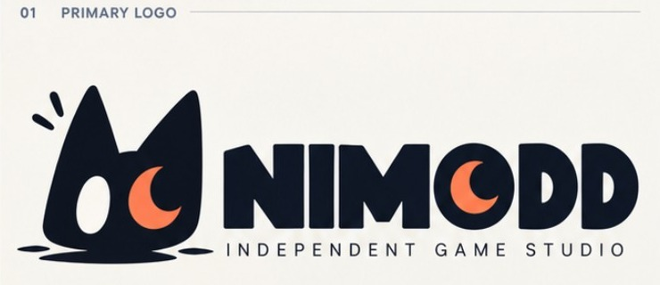
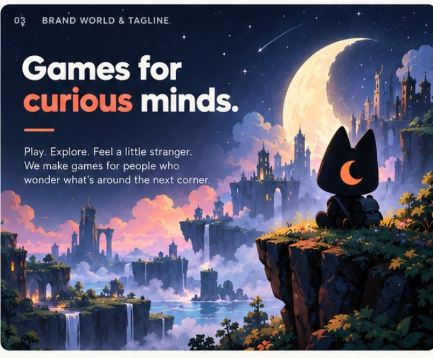

Bientôt sur Google Play
Tombward
Un puzzle d’exploration dans un cimetière oublié. Compte tes actions, déjoue les pièges et rassemble les fragments de ton passé.
Découvrir Tombward

INDEPENDENT GAME STUDIO
Jouer. Explorer. Se laisser surprendre. Nimodd crée des jeux pour celles et ceux qui aiment découvrir ce qui se cache au prochain détour.
Découvrir nos jeuxNIMODD
Nimodd est un studio de jeux indépendant qui aime mélanger des mécaniques accessibles, une identité visuelle forte et une petite dose d’étrangeté.
Chaque projet possède son propre univers tout en gardant la même envie : créer des jeux simples à prendre en main et mémorables à parcourir.
Des idées qui donnent envie d’essayer, d’explorer et de comprendre.
Une expérience claire, soignée et agréable dès les premières minutes.
Une direction artistique et des mécaniques avec leur propre personnalité.
NOS JEUX
Premier voyage : un petit fantôme cherche la tombe qui lui appartient.
Un puzzle d’exploration dans un cimetière oublié. Compte tes actions, déjoue les pièges et rassemble les fragments de ton passé.
Découvrir TombwardPROCHAINEMENT
Cette page accueillera les prochains jeux Nimodd — dont Peanut Quizz — au fur et à mesure de leur développement.
CONTACT